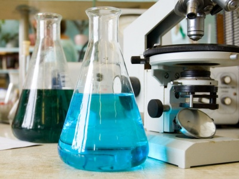
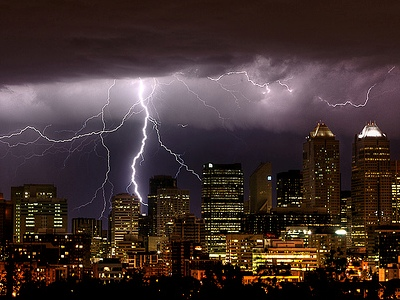
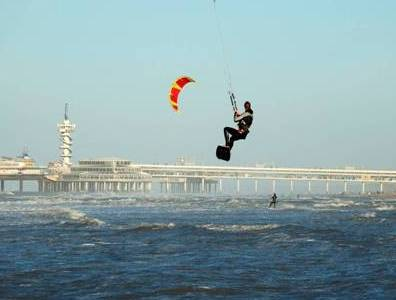

Proeven doen spreekt tot de verbeelding
Kinderen leren spelenderwijs door dingen zelf te ontdekken.
Als je iets loslaat valt het naar beneden.
Waarom niet omhoog?
En stenen in het water gooien om je bal naar de kant te halen werkt niet...
Waarom?
Wat zou er gebeuren als...
Ieder kind is nieuwsgierig en die nieuwsgierigheid is vruchtbare grond voor leerervaringen die blijven hangen.
Helaas hebben veel kinderen tegen de tijd dat ze op de middelbare school een vakkenpakket moeten kiezen, grondig afgeleerd nieuwsgierig te zijn.
Kennis komt uit boeken die je door moet worstelen en is zo droog als het papier waarvan ze gemaakt zijn.
Het is alsof ze moeten eten zonder honger te hebben.
In de natuurkunde-workshop draait het om het krijgen van "gezonde trek"!

Ongetemde en getemde electriciteit
De natuurkunde-workshop bestaat uit drie lesmiddagen waarbij eenvoudige maar aansprekende natuurkunde-proeven centraal staan.
Aan de orde komen achtereenvolgens waarnemen, licht en geluid, kracht en energie en het gedrag van water en lucht.
Sommige proeven worden gedaan door de docent, andere door de leerlingen.
Rond die proeven is een boeiend verhaal geweven, geillustreerd met vele praktijkvoorbeelden.
Hoe kwamen grote ontdekkingen tot stand en hoe worden ze toegepast.
Wat voor krachten spelen een rol in de natuur om ons heen en hoe weet de mens sommige daarvan te temmen.
Als je er eenmaal oog voor hebt, is natuurkunde overal!
De meeste proeven kunnen in het klaslokaal worden gedaan, een enkele proef op het schoolplein.
De tijdsindeling wordt aangepast aan de wensen van de school.

Spelen met de kracht van wind en water
De leskosten worden in overleg vastgesteld.
De school dient te zorgen voor een beamer en een goed verduisterd lokaal.
Voor buitenactiviteiten hebben de kinderen een weerbestendige jas en schoenen nodig
Een verantwoordelijke docent van de school dient tijdens lessen en buitenactiveiten aanwezig te zijn.